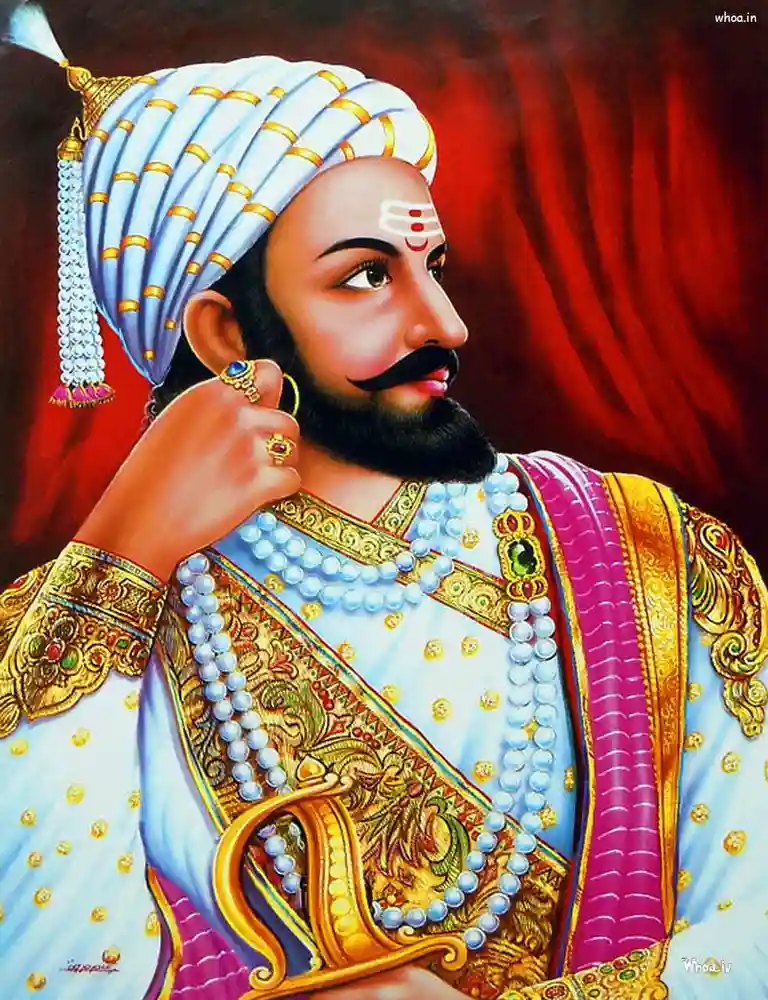

हमारे महापुरुषों का इतिहास
.jpeg)
महाराणा प्रताप
महाराणा प्रताप मेवाड़ के महान राजा थे जिन्होंने मुगलों के विरुद्ध संघर्ष किया। हल्दीघाटी का युद्ध उनका सबसे प्रसिद्ध युद्ध है। महाराणा प्रताप के जन्मस्थान के प्रश्न पर दो धारणाएँ है। पहली महाराणा प्रताप का जन्म कुम्भलगढ़ दुर्ग में हुआ था क्योंकि महाराणा उदयसिंह एवम जयवंताबाई का विवाह कुंभलगढ़ महल में हुआ। दूसरी धारणा यह है कि उनका जन्म पाली के राजमहलों में हुआ। महाराणा प्रताप की माता का नाम जयवंता बाई था, जो पाली के सोनगरा अखैराज की बेटी थी। महाराणा प्रताप का बचपन भील समुदाय के साथ बिता , भीलों के साथ ही वे युद्ध कला सीखते थे , भील अपने पुत्र को कीका कहकर पुकारते है, इसलिए भील महाराणा को कीका नाम से पुकारते थे। लेखक विजय नाहर की पुस्तक हिन्दुवा सूर्य महाराणा प्रताप के अनुसार जब प्रताप का जन्म हुआ था उस समय उदयसिंह युद्व और असुरक्षा से घिरे हुए थे।[11] कुंभलगढ़ किसी तरह से सुरक्षित नही था। जोधपुर के शक्तिशाली राठौड़ी राजा राजा मालदेव उन दिनों उत्तर भारत मे सबसे शक्तिसम्पन्न थे। एवं जयवंता बाई के पिता एवम पाली के शाषक सोनगरा अखेराज मालदेव का एक विश्वसनीय सामन्त एवं सेनानायक था।
.jpeg)
छत्रपति सम्भा जी महाराज
छत्रपति संभाजी महाराज का जन्म 14 मई 1657 को पुरंदर किले में हुआ था। उनकी माता सईबाई का देहांत उनके बचपन में ही हो गया था, इसलिए उनका पालन-पोषण उनकी दादी जीजाबाई ने किया। उन्हें 'छवा' (शेर का बच्चा) भी कहा जाता था और वे संस्कृत सहित आठ भाषाओं के ज्ञाता थे। वे छत्रपति शिवाजी महाराज के पुत्र थे और उनकी पत्नी का नाम येसूबाई था, जिनसे उन्हें छत्रपति साहू नामक पुत्र हुआ।
संभाजी का बचपन कठिनाइयों से भरा था। उनकी सौतेली माता सोयराबाई अपने पुत्र राजाराम को उत्तराधिकारी बनाना चाहती थीं, जिसके कारण शिवाजी और संभाजी के संबंध खराब हो गए थे। एक बार सजा मिलने पर संभाजी मुगलों से जा मिले, लेकिन जल्द ही उन्हें अपनी गलती का एहसास हुआ और वे वापस शिवाजी के पास लौट आए।
बचपन में मुगल कैद से भागने के बाद अज्ञातवास के दौरान संभाजी की मित्रता कवि कलश से हुई, जिन्होंने उन्हें संस्कृत सिखाई और उनका मार्गदर्शन किया। कलश के प्रभाव से संभाजी की साहित्य में रुचि बढ़ी और उन्होंने अपने पिता के सम्मान में 'बुधाचरित्र' और 'श्रृंगारिका' जैसी रचनाएँ लिखीं।
एक शासक के रूप में, 11 जून 1665 को पुरंदर की संधि के तहत 8 वर्षीय संभाजी ने अपने पिता के साथ बीजापुर के खिलाफ औरंगजेब का साथ दिया, लेकिन बाद में उन्हें औरंगजेब के दरबार में नजरबंद कर दिया गया, जहाँ से वे भाग निकले। 30 जुलाई 1680 को उन्हें सत्ता सौंपी गई। उन्हें अपने पिता के सहयोगियों पर भरोसा नहीं था, इसलिए उन्होंने कवि कलश को अपना सलाहकार नियुक्त किया, जिससे मराठा अधिकारियों में असंतोष फैल गया और उनके शासनकाल में कोई बड़ी उपलब्धि हासिल नहीं हो सकी।
हालांकि, संभाजी महाराज ने अपने छोटे से जीवनकाल में हिन्दू समाज के लिए महत्वपूर्ण कार्य किए। उन्होंने औरंगजेब की 8 लाख की सेना का सामना किया और कई युद्धों में उसे पराजित किया, जिससे उत्तर भारत के हिन्दू शासकों को अपना राज्य पुन: प्राप्त करने का समय मिला। उन्होंने मुगलों को महाराष्ट्र में उलझाए रखा और अपने राज्य के भीतर दुश्मनों से भी संघर्ष किया। उन्होंने 1682 में औरंगजेब के पुत्र अकबर को शरण देने की पेशकश भी की थी।
संभाजी ने शिवाजी महाराज द्वारा शुरू किए गए हिन्दू धर्म में वापसी के प्रयासों को आगे बढ़ाया और इसके लिए एक अलग विभाग बनाया। उन्होंने जबरन मुस्लिम बनाए गए कई लोगों की हिन्दू धर्म में वापसी कराई। वे भगवान शिव के परम भक्त थे और अपने अंतिम समय तक हिन्दू धर्म का पालन करते रहे।
शिवाजी महाराज की मृत्यु के बाद, औरंगजेब ने मराठा राज्य पर आक्रमण किया। 1682 में मुगलों ने रामसेई दुर्ग को घेरने की कोशिश की, लेकिन असफल रहे। 1687 में वाई के युद्ध में मराठा कमजोर पड़ गए और संभाजी 1689 में संगमेश्वर में मुगलों द्वारा बंदी बना लिए गए।
औरंगजेब ने संभाजी और कवि कलश को इस्लाम अपनाने के लिए मजबूर किया, लेकिन उन्होंने इनकार कर दिया। उन्हें अपमानित किया गया, यातनाएँ दी गईं और अंततः 11 मार्च 1689 को उनका सिर धड़ से अलग कर दिया गया। उनके शरीर के टुकड़े कुत्तों को खिला दिए गए और उनके सिर को महाराष्ट्र के कस्बों में प्रदर्शित किया गया ताकि मराठों में भय व्याप्त हो सके। अपनी मृत्यु तक संभाजी ने अपने धर्म और राष्ट्र के प्रति अटूट निष्ठा दिखाई।
.jpeg)
राणा सांगा
महाराणा संग्राम सिंह, सोलहवीं शताब्दी में शासन करने वाले एक प्रसिद्ध राजपूत राजा थे, जिन्हें राणा सांगा के नाम से भी जाना जाता था। उन्होंने शानदार नेतृत्व और अटूट साहस के साथ 20 वर्षों तक शक्तिशाली हिंदू साम्राज्य मेवाड़ पर शासन किया। 12 अप्रैल, 1482 को राणा सांगा का जन्म मेवाड़ के शासक परिवार में हुआ था। राणा सांगा के पिता का नाम राणा रायमल था। राणा सांगा ने दिल्ली सल्तनत के लोधियों और मुगल शासकों के खिलाफ लड़ाई लड़ी।
राणा सांगा का इतिहास
राणा रायमल की मृत्यु के बाद मेवाड़ की गद्दी के लिए भीषण संघर्ष हुआ, उन्होंने 1473 से 1508 तक शासन किया। राणा रायमल के बड़े पुत्र पृथ्वीराज सबसे योग्य राजा के रूप में उभरे।
पृथ्वीराज ने मेवाड़ पर अपना प्रभुत्व स्थापित करने के लिए मेवाड़ के महाराणा बनने के रास्ते में आने वाली हर बाधा को दूर करना शुरू कर दिया। राणा सांगा पृथ्वीराज के मेवाड़ के राज्य पर कब्ज़ा करने के रास्ते में खड़े थे। उनके बड़े भाई पृथ्वीराज ने उन्हें हमेशा के लिए हटाने के लिए राणा सांगा की एक आँख को अंधा कर दिया। राणा सांगा को अंततः चित्तौड़ से भागना पड़ा और अजमेर में सुरक्षा की तलाश करनी पड़ी।
फिर भी पृथ्वीराज की मृत्यु के बाद, रंगा सांगा ने नियंत्रण प्राप्त किया और 1508 में मेवाड़ की गद्दी संभाली। फिर भी पृथ्वीराज की मृत्यु के बाद, रंगा सांगा ने नियंत्रण प्राप्त किया और 1508 में मेवाड़ की गद्दी संभाली। राणा सांगा ने अपने अदम्य साहस, सैनिकों की कमान और कूटनीतिक रणनीतियों के माध्यम से मेवाड़ की समृद्धि और आधिपत्य को बहाल किया।

छत्रपति शिवाजी
छत्रपति शिवाजी महाराज मराठा साम्राज्य के संस्थापक थे। उन्होंने धर्म, स्वतंत्रता और स्वराज्य के लिए संघर्ष किया और एक शक्तिशाली हिंदू साम्राज्य खड़ा किया। हमारे भारत में समय-समय पर कई वीर और महान पुरुषों ने जन्म लिया है, उन्हीं में से एक थे छत्रपति शिवाजी महाराज – Shivaji Maharaj जिन्होंने अपना पूरा जीवन मानवता की रक्षा करने और देश में मराठा साम्राज्य की स्थापना करने में समर्पित कर दिया था।
वे एक ऐसे योद्दा थे जिन्होंने भारतीय जनता को मुगल शासकों के अत्याचारों से मुक्त करवाया था, उन्होनें मुगल शासकों का साहसीपूर्वक सामना कर मराठा साम्राज्य की स्थापना की थी। भारत भूमि शिवाजी महाराज जैसे महान योद्दाओं के जन्म से गौरान्वित हुई है।
शिवाजी महाराज का जन्म और परिवार: शिवाजी महाराज का जन्म पुणे के जुत्रार गांव के शिवनेरी दुर्ग में 19 फरवरी, 1630 में हुआ था। उनका असली नाम शिवाजी भोसले था, जो माता शिवाई के नाम पर रखा गया था क्योंकि उनकी माता जीजाबाई शिवाई देवी की परम भक्त थीं।
उनके पिता शाहजीराजे भोसले बीजापुर के सुल्तान आदिलशाह के दरबार में सैन्य सेनापति थे। उन्होंने शिवाजी और जीजाबाई की सुरक्षा और देखभाल की जिम्मेदारी दादोजी कोंडदेव को सौंपी थी, जिन्होंने शिवाजी को युद्धकला, घुड़सवारी और राजनीति की शिक्षा दी।
राष्ट्रमाता जीजाबाई ने शिवाजी में बचपन से ही राष्ट्रप्रेम, नैतिकता और धर्मनिष्ठा जैसे गुणों का बीजारोपण किया। रामायण और महाभारत की कहानियां सुनाकर उन्होंने शिवाजी के अंदर मर्यादा और धैर्य के गुणों को विकसित किया।
छत्रपति शिवाजी महाराज एक ऐसे राजा थे जिन्होंने धर्म, स्वतंत्रता और स्वराज्य के लिए संघर्ष किया और एक शक्तिशाली हिंदू साम्राज्य की नींव रखी।


.jpeg)
.jpeg)
.jpeg)